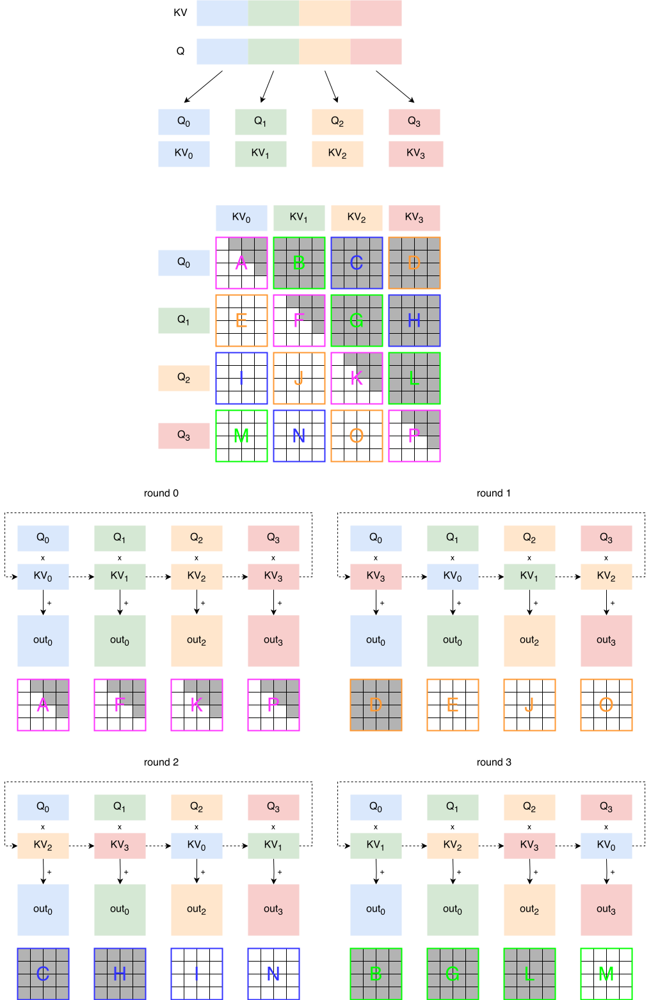
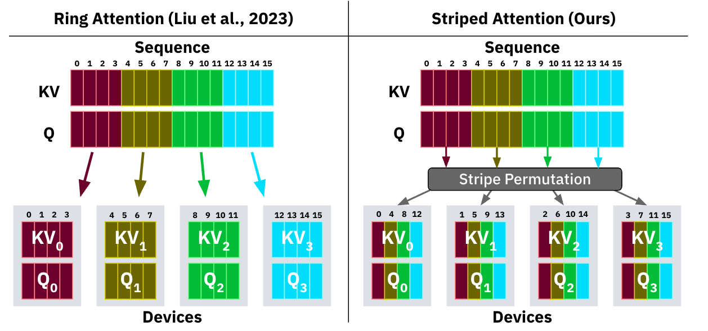
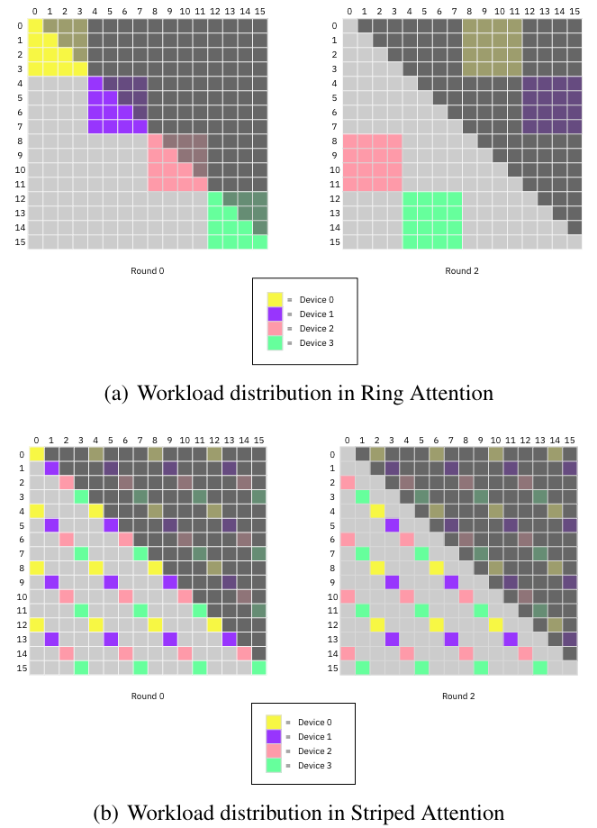
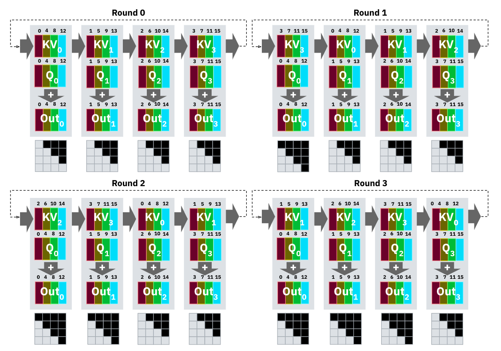

SP 对比 TP
这两个其实都是为了解决 attention 计算的问题，其实 TP 的思路比较直接一些：按照 head 维度将计算分配到不同的卡上，但是在实践中仍然存在着以下几个问题：
- 可能 head 维度无法按照 TP size 整数倍切分
- attention 按照 head 维度 TP 切分之后需要做 AllReduce，这一步在通信原语中属于通信量比较大的，如果 TP 要跨机的话，那么其效率就会降低。这个缺陷尤其体现在 prefill 阶段，因为通信量大，跨机带宽低，并且没法子做 overlap。
- 对于超长序列，如果采用 TP 切分，每个 TP rank 在计算 QKV 之前仍然要保存全量的 token embedding \(X\)，这个东西本身在超长序列就已经很大了，很容易出现显存放不下的情况。
所以 SP 应用的初衷是为了解决 TP 在超长序列下效率不足的问题。
Ring Attention
ring attention 将 sequence 的 Q、KV 切成多段，

- Q：按序列维度切分 \[ T_q = T / P \]
- K, V：逻辑上完整，但 物理上通过 ring 分块流动
- 每个 rank：
- 固定自己的 Q block
- 依次接收来自其他 rank 的 KV block（共 P 次）
Stripe Attention
标准 Ring Attention（尤其是最早那版设计）隐含一个前提：
每个 GPU 在每一轮 ring step 上，做的计算量大致相同
也就是说，假设你把：
- Q 均分到 P 个 GPU
- K/V 也按 block 均分
- 每一轮： 每个 GPU 都拿到一块 KV，算一次
Q_local × KV_block
如果是 无 mask / full attention，这个假设基本成立。
在 causal attention 下，问题就来了，对不同 GPU 来说：
| GPU | Q 所在位置 | 可见的 K 数量 |
|---|---|---|
| GPU 0 | 很靠前 | 很少 |
| GPU 1 | 稍靠后 | 多一点 |
| … | … | … |
| GPU P−1 | 最后 | 几乎全部 K |
每个 GPU 实际参与的有效 attention 计算量差异巨大
但 ring attention 的调度是：
- KV block 照样完整地绕一圈
- GPU 0 仍然要“看见”后面的 KV block（只不过被 mask 掉）
结果
- 计算被 mask 掉了
- 但 ring 通信等其他操作都 照常发生
这就是负载不均 + 低效计算
Stripe Attention 的核心改动是：不是“方块（block）划分”，而是“斜条纹（stripe）划分” attention 计算区域
首先切分序列不是简单地按照块来切，而是跳跃性地分配：

从全局视角来看，每一轮每个 partition 计算的 attention 部分就从一个 block 变成了分散性的点：

这样每一轮的计算也就更加均衡了：

Ulysses
在处理超长序列时，单张显卡的显存可能无法满足需求。Deepspeed Ulysses 正是为了解决这一问题而设计的。对于超长序列，如果采用张量并行（TP）的方式进行切分，以第 i 个计算单元为例：
方案 A：纯 TP
X (复制到 P 份)
→ QKV (每卡算 H/P heads)
→ Attention (本地)
→ allreduce / concat方案 B：SP + Ulysses
X (T 切分)
→ QKV (本地算)
→ all2all (attention 前)
→ Attention
→ all2all (attention 后)
→ 后续层继续 SPTP 的 KV cache 是「跨层长期存在的」
- decode 阶段
- 每一步都会用到历史 KV
- 所以 TP 的：
- KV cache = 全序列 × 部分 head
- 长期驻留显存
而 Ulysses 的：
- attention 前的
全序列 × 部分 headKV - 只在 kernel 内短暂存在
- 用完立刻释放 / 重排
Ulysses + SP 对比 TP 的 优势：
- X / hidden / KV 始终只占 1/P
- 只有 attention 阶段需要通信
- KV cache 产生阶段完全本地
理论分析
计算通信 overlap
Ring Attention（严格说是 ring-based SP attention）的 overlap 指的是：
在等待下一块 KV 通过 ring 传输的同时，GPU 正在计算当前块的 attention（Q × Kᵀ + softmax + ×V）
即在每个 ring step 中，计算 block attention 的时间应该能够 overlap 住传输 kv cache 的时间。
参数定义
首先定义一些参数，和 attention 计算量分析一章保持一致：
- B：batch size
- T：序列长度
- N：attention head 数
- H：每个 head 的维度（= D_head）
- D：通常等于 H（你这里我直接用 H）
- P: SP size，即将序列切分为几份
ring step
对 每一个 ring step（第 i 块 KV），GPU 需要：
1️⃣ 通信（recv KV）
接收一个 KV block：
\[ \text{Bytes}_\text{comm} = B \cdot T_k \cdot N \cdot H \cdot 2 \cdot \text{sizeof(dtype)} \]
其中： \[ T_k = T / P \]
2️⃣ 计算（attention on this block）
对当前 Q block 和该 KV block：
QKᵀ FLOPs
\[ \text{FLOPs}_{QK} = 2 \cdot B \cdot N \cdot T_q \cdot T_k \cdot H \]
AV FLOPs
\[ \text{FLOPs}_{AV} = 2 \cdot B \cdot N \cdot T_q \cdot T_k \cdot H \]
📌 合计： \[ \text{FLOPs}_\text{step} = 4 \cdot B \cdot N \cdot T_q \cdot T_k \cdot H \]
代入 \(T_q = T_k = T/P\)：
\[ \boxed{ \text{FLOPs}_\text{step} = 4 \cdot B \cdot N \cdot H \cdot \frac{T^2}{P^2} } \]
关于何时能够实现计算与通信的重叠，其核心判据可以概括为：当单步注意力计算的时间大于或等于单步 KV 缓存通信的时间时，理论上可以实现完全的重叠。用数学公式表达即：
\[ T_\text{comp} \ge T_\text{comm} \]
代入具体的时间模型来看：
计算时间 \(T_\text{comp}\) 的模型为： \[ T_\text{comp} = \frac{\text{FLOPs} \times \text{step}}{\text{GPU FLOPs/s}} = \frac{4 B N H T^2}{P^2 \cdot F_\text{GPU}} \]
通信时间 \(T_\text{comm}\) 的模型（考虑 NVLink 或 InfiniBand）为： \[ T_\text{comm} = \frac{\text{Bytes}_\text{comm}}{\text{BW}_\text{eff}} = \frac{2 B N H (T/P) \cdot \text{sizeof(dtype)}}{\text{BW}_\text{eff}} \]
将重叠条件 \(T_\text{comp} \ge T_\text{comm}\) 代入并化简，是得到关键结论的步骤：
\[ \frac{4 B N H T^2}{P^2 F_\text{GPU}} \ge \frac{2 B N H T \cdot \text{sizeof(dtype)}}{P \cdot \text{BW}_\text{eff}} \]
消去公共项 \(B, N, H, T\) 后，得到核心不等式：
\[ \boxed{\frac{2 T}{P} \ge \frac{F_\text{GPU} \cdot \text{sizeof(dtype)}}{\text{BW}_\text{eff}}} \]
这个公式的物理意义非常重要，主要有两点：
首先，重叠的可能性与批次大小 \(B\)、注意力头数 \(N\) 或隐藏层维度 \(H\) 无关。这一点很多讨论未明确提及：即使批次增大，计算和通信时间会同比例增加，因此重叠的条件本身并不改变。
其次，核心变量实际上只有三个。是否能够重叠等价于判断比值 \(T/P\) 是否足够大：
\[ \boxed{\textbf{是否重叠} \Longleftrightarrow \frac{T}{P} \text{ 够不够大}} \]
其具体阈值约为：
\[ \frac{T}{P} \gtrsim \frac{F_\text{GPU}}{\text{BW}_\text{eff}} \times \text{sizeof(dtype)} \]
为了获得更直观的理解，可以代入一个真实量级进行校准。以 A100 SXM GPU 和 FP16 数据类型为例： - \(F_\text{GPU} \approx 312 \, \text{TFLOPs}\) - \(\text{BW}_\text{eff} \approx 300 \, \text{GB/s}\)（NVLink 有效带宽） - \(\text{sizeof(dtype)} = 2 \, \text{bytes}\)
计算阈值： \[ \frac{F_\text{GPU}}{\text{BW}_\text{eff}} \cdot \text{sizeof(dtype)} \approx \frac{312 \times 10^{12}}{300 \times 10^9} \times 2 \approx 2080 \]
由此可以得出一个直观结论： \[ \boxed{\frac{T}{P} \gtrsim \mathcal{O}(10^3)} \] 即当序列长度 \(T\) 与流水线并行度 \(P\) 的比值达到大约 \(10^3\) 量级时，计算与通信的重叠才可能实现。
对比 TP
如果通信与计算完全 overlap，ring attention 的理论效率可以接近甚至优于 TP（Tensor Parallel）
- TP 的损耗在于最后的 AllReduce 操作，TP 数量越大，这个损耗越大
- SP 的损耗在于 第一轮无法 overlap 以及 pipeline 尾部（drain）损耗
首先把两者抽象成同一个模型：
总时间 = max(计算时间, 通信时间) + 无法 overlap 的部分完美情况下，SP 的额外损耗 ≈ 2 × (一个 chunk 的传输时间)
但前提非常苛刻，而且现实中不容易达到， 原因在于：
- 在硬件中，通信量大时带宽利用率 > 通信量小时带宽利用率，就像一次大 gemm 的 MFU 优于若干次小 gemm，一次 AllReduce 大于 N 次 hop，这一点在估算时要额外考虑
- 同样，在 SP 的 Attention 中，如果切得太小，attention compute 不够“重”，导致实际 MFU 不高